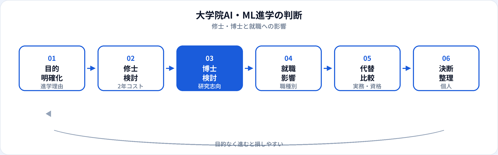

「AIで稼ぐなら大学院が必要？」と聞かれても、答えは職種と目的次第です。修士・博士は研究開発や論文実績が評価される場では有利になりますが、多くの実装・運用中心のAIエンジニア職では必須ではありません。本記事は市場・キャリアの視点から、進学の目的、修士・博士の得失、職種別の影響、大学院以外のルートを2026年6月時点で整理します。
まず「なぜ進学するか」を決める
大学院進学で後悔しやすいのは、「就職に有利だから」だけが理由のときです。AI・ML分野では、目的によって最適なルートが大きく変わります。
| 進学の目的 | 修士・博士の相性 | 代替になりやすい手段 |
|---|---|---|
| 研究職・R&D | ◎ 論文・研究経験が直結 | 企業研究所のインターン（博士は依然有利な場面多い） |
| 実装・プロダクト開発 | △ 必須ではない | ポートフォリオ、副業、正社員経験 |
| データ分析・意思決定支援 | △〜○ 統計の深さは加点 | 実務分析、資格、ドメイン知識 |
| キャリアチェンジ（未経験） | △ 2年の機会コスト大 | 学習ロードマップ、転職 |
| 学術界・教職 | ◎ 博士が前提になることも | — |
修士課程（約2年）のメリット・デメリット
メリット
専門分野の体系的な学習、研究室ネットワーク、論文・学会発表の実績。新卒採用で「修士」枠に応募できる企業もある。
デメリット
約2年の収入機会損失。研究テーマが就職先とずれるリスク。実装スキルは自学・インターンで補う必要があることも。
日本の修士は、情報系・工学系で機械学習・深層学習・自然言語処理などの研究室を選べば、就職に直結するスキルも得られます。一方、論文執筆に時間を取られ、本番運用やチーム開発の経験が足りない卒業生もいます。研究室選びと並行した実装が重要です。
博士課程のメリット・デメリット
博士は研究を本職にする覚悟がある人向けの選択肢です。期間は3〜5年以上になることも多く、就職「だけ」が目的だと機会コストが非常に大きくなります。
-
メリット
最先端研究、論文実績、企業の研究職（Research Scientist等）や学術職で差別化。特定分野の深い専門性。
-
デメリット
長期間の低収入・不安定さ、テーマの市場需要とのミスマッチ、実装職では過剰スペックと見なされることも。
-
現実的な位置づけ
大手テックの研究部門、AI企業のモデル研究、大学・国研など研究が主戦場のキャリアを狙うなら検討。プロダクト実装が主なら修士で止めるか、実務ルートを選ぶ人が多い。
職種別：大学院はどれだけ効くか
| 職種 | 大学院の効き方 | 補足 |
|---|---|---|
| AIエンジニア | △ 必須ではない | 実装・運用・ポートフォリオが重視されやすい |
| 機械学習エンジニア | △〜○ | パイプライン・デプロイは実務経験が効く |
| データサイエンティスト | ○ 統計・因果の深さで加点 | 博士必須ではない。ビジネス翻訳力も同等に重要 |
| 研究職・Applied Scientist | ◎ 修士以上が求められること多い | 論文・再現性・新規手法の開発 |
| 生成AIエンジニア | △〜○ | LLM実装・評価の実務スキルが直結。研究背景は加点 |
| MLOpsエンジニア | △ | インフラ・運用・SREに近いスキルが中心 |
職種ガイド各記事のFAQでも「大学院は必須ではない」と整理しています。進学を検討中なら、目指す職種のJDを複数社分読み、修士・博士の記載有無を確認するのが確実です。
機会コストと費用
修士2年間は、多くの場合フルタイムの就職収入を得られない期間です。国立大学院の授業料は比較的抑えられますが、私立・生活費・奨学金の返済は個人差が大きいです。
| 比較軸 | 大学院（修士2年） | 実務・独学ルート（同期間） |
|---|---|---|
| 収入 | アルバイト・RA・奨学金に依存しがち | 正社員・副業で収入を得られる |
| スキル | 研究・理論・論文 | 本番実装・チーム開発・業務ドメイン |
| 就職材料 | 学位・論文・教授推薦 | 職務経歴・GitHub・成果物 |
| リスク | テーマと市場のずれ | 独学の迷い・未経験壁（準備で軽減可） |
正社員の年収感は国内年収の相場を参照。2年間の機会損失を学位のメリットと比較するときは、狙う職種で学位がフィルターになっているかを先に確認してください。
大学院に行かない選択肢
進学すべき人・しない方がよい人
| 大学院を検討しやすい | 実務ルートを優先しやすい |
|---|---|
| 研究職・論文発表が仕事の中心になりたい | プロダクトの実装・運用がやりたい |
| 特定分野を2年かけて深掘りしたい | できるだけ早く業界経験を積みたい |
| 学部時代に研究が得意で続けたい | 社会人・転職者で収入を止めにくい |
| 狙う企業のJDに修士以上が明記されている | 未経験からのキャリアチェンジが目的 |
どちらも「正解」ではなく、目的と機会コストの一致が大切です。AI関連職の将来性とあわせ、5年後にどの仕事をしているイメージかで決めると迷いにくいです。
判断の流れ

よくある質問
AIエンジニアになるのに大学院は必要？
一般的な実装・運用職では必須ではありません。AIエンジニアの職種ガイドのとおり、ポートフォリオと実務経験が重視されることが多いです。
修士と博士、どちらを選ぶべき？
研究職を本気で目指すなら博士も視野に。プロダクト開発が主目的なら修士で止めるか、実務ルートを選ぶ人が多いです。
社会人から大学院に進む価値はある？
研究職への転換や特定分野の深掘りには有効です。実装中心のチェンジなら、在職学習・転職の方が早い場合もあります。
データサイエンティストは博士が必要？
必須ではありません。データサイエンティストの職種ガイドでも、実務の分析力とコミュニケーションが重視されると整理しています。